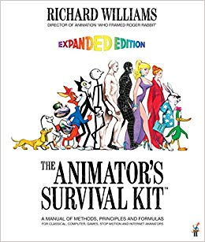

98-331: Student-Taught Course | Animation & Video Editing
Animation is hard. But you aren't the only animator out there. There are many others that had overcome the obstacles to become professional animators and have left an abundance of resources in their wake. Sometimes you need a little bit of extra resources to get you on your way too. Below is a list of additional resources that can help in one or more areas of video editing & animation.

The Animator's Survival Kit
When you ask any animator what's the best way to learn animation, nearly all of them will refer you to this book. Written by former Disney Studio Animator Richard Williams and practically a bible to Disney Studios itself, 'The Animator's Survival Kit' is breaks down all the key rules of animation. It provides thurough examples and illustrations of these rules in practice, will get you to think more carefully about motions and interactions between objects, and describe to you the importance of character and setting in animation.
12 Principles of Animation
In 1981, Disney Animators Ollie Johnston & Frank Thomas introduced a set of animation principles that abided by the basic laws of physics while appealing to emotional timing & character appeal. A few dacdes later, Animator & YouTuber Alan Becker reintroduces these principles in his YouTube series 'The 12 Principles of Animation'. Becker is able to repeat the key ideas from Johnston & Frank's original list while subtly injecting his own ideas on animation into the mix. He conveys these ideas through vivid & smooth animation cycles that are easy to follow and keep viewers engrossed throughout the video.
Lynda.com
Lynda.com gives acess to hundreds of animation & video-editing videos and courses. Whether you're a pro or just starting out, Lynda.com has the intro courses and advanced material to help anyone. Your CMU emails grant you free access to these services.
Adobe Creative Suite Forums
Have a bug that just won't go away? Ask it in a forum! Adobe provided software-specific forums where questions are answered by other top creators or Adobe software engineers themselves. Responses are typically recieved within a week. You must have an Adobe account to be able to post on the forum.
Creative COW
Creative COW is another QnA forum for creative content makers. If you cannot find an answer on the official Adobe forums, chances are it will be on here. Creative COW also hosts additional video tutorials as well.
Wacom Graphics Tablets
With advancing technologies, many animators are moving away from paper & pencil towards drawing tablets that can draw directly into animation softwares. Wacom is a Japanese technology industry specializing in the production of a wide variety of graphics tablets. Their cheap & affordable Intuous line features smaller-sized tablets with no screen that hook up directly to a computer. The cheapest tablet sells for $79 and features an aditional drawing software to help you get started.